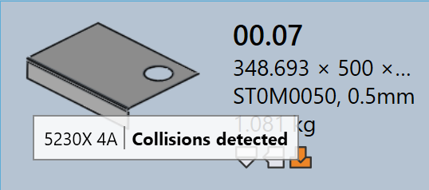

Työstön tila
JFY Plus-sovelluksessa kukin osan ruutu ilmaisee visuaalisesti kyseisen osan työstöjen tilan kaikille käytettävissä oleville koneille. Tämä auttaa käyttäjiä näkemään nopeasti, mille koneille osa on työstetty ja onko työstö valmis, vaatiiko se tarkistusta vai puuttuuko se.
-
Työstöjen tila näytetään suoraan osan ruudussa kuvakkeilla ja värimerkinnöillä.
-
Kukin kuvake edustaa koneteknologiaa (esim. Bend, Laser).
-
Kuvakkeen väri ilmaisee kyseisen koneen nykyisen työstöjen tilan.
Alla oleva taulukko selittää kunkin kuvakkeen ja värin merkityksen ja auttaa käyttäjiä tulkitsemaan työstöjen tilan tarkasti.

Työstövirheet
CAM-virhe (Computer-Aided Manufacturing) syntyy työstö- tai valmistuksen valmisteluvaiheessa. Nämä virheet johtuvat ongelmista, kuten työkalujen törmäyksistä, puuttuvista työstöistä tai virheellisistä leikkausolosuhteista.
Seuraava kuva näyttää esimerkkejä työstövirheiden tiloista, joita osan ruudussa voidaan näyttää työstön aikana. Seuraavat osiot kuvaavat kunkin työstövirheen ja sen syyn.

Taivutustyöstöjen virheet
-
Collisions detected ja Gripper error : Taivutusasetus aiheuttaa työkalujen tai tartuntapihdin törmäyksiä simuloinnin aikana.
-
Tool Overload ja Narrow flange or hole too close : Taivutustyökalut ovat ylikuormitettuja, tai reikät sijaitsevat liian lähellä taivutuslinjaa, mikä voi vaurioittaa osaa tai työkaluja.
-
Needs review ja Short Punch/Die span : Työstöasetus vaatii manuaalista tarkistusta, tai valittu leiän/stämpin jänneväli on pienempi kuin osa edellyttää.
-
Tool Missing, Poor backguage tai Part too big for this machine : Tarvittavia taivutustyökaluja ei ole käytettävissä, takavasteä ei ole määritetty oikein tai osa on liian suuri valitulle koneelle.
Leikkaustyöstöjen virheet
-
Missing cutting condition : Leikkausolosuhdetta ei ole määritetty raakamateriaalille, joten leikkausta ei voi suorittaa.
-
Untooled or partially tooled contours : Jotkin muodot tai reunat jäävät huomiotta tai vain osittain katetuiksi työstöprosessin aikana, mikä tekee osasta leikkaukseen keskeneräisen.